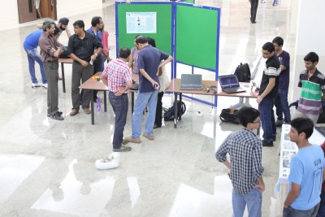

TECH TALK
Time: 3:00 - 4:00 PM Date: 6th October 2013 Venue: VMCC
Student Alumni Relations Cell in collaboration with STAB brings you Technical Fair and Technical Talk in the Student Alumni Meet (SAM) 2013. This year, we have expanded the event to encompass technical activities of the institute in SAM so that the alumni coming to attend the meet can have a glimpse of current tech scene in the institute. There will be around 15 projects (made by students of IITB) showcased at the venue. Through this event, we aim to develop the spirit of technical activities among students as well as to motivate them to focus on what 'T' stands in the name of this institute. This being the main motive of the talk we are keeping a session on technical talks and a short award ceremony after that. Awards will be given to those students who completed their ITSP projects in summer 2013 and to people who completed extraordinary technical projects in the institute.
Tech Talk by
Sneh Vaswani
Research Engineer at Siemens Corporate Research & Technologies. Team leader of the Autonomous Underwater Vehicle (AUV) project;Worked on Embedded System Design and Implementation. Has had prior work and intern experience Siemens, Phi robotics and ETH Zurich


SAM 2.0 Tech Fair